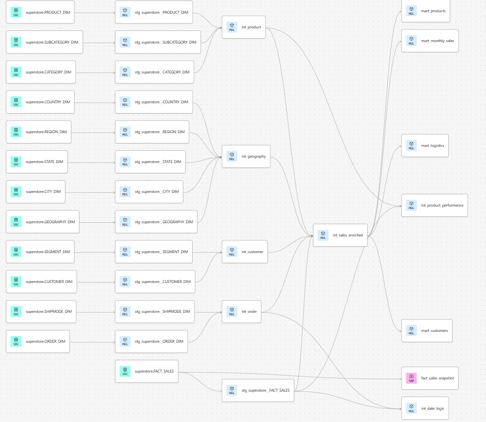

Snowflake Ingestion
Raw Superstore data is loaded into Snowflake and prepared as the foundation for the analytics pipeline.
dbt SQL Transformation
SQL models are organized into staging, intermediate, and marts layers using dbt best practices.
Visualization
Clean business-ready models are used to generate insights across finance, customers, products, and operations.
Project Goal
The goal of this project is to transform the Superstore dataset from Kaggle into a structured analytics warehouse using Snowflake and dbt.
- Ensure data quality with testing and validation
- Build reusable transformation layers
- Deliver business-ready analytics models
- Create clear outputs for dashboarding and decision-making
Data Model & Architecture
The data model follows a star schema centered around a sales fact table, connected to customer, product, order, and geography dimensions.

❄️ Snowflake Ingestion
The raw Superstore dataset was loaded into Snowflake to create a scalable cloud data warehouse layer. This ingestion stage acts as the starting point of the full analytics pipeline.
What This Stage Includes
- Loading raw CSV data into Snowflake
- Creating raw database and schema structures
- Preparing source tables for dbt models
- Keeping raw data separated from transformed analytics layers
Purpose
This stage ensures that the source data is centralized, queryable, and ready for structured transformation inside dbt.
⚙️ dbt SQL Transformation
dbt was used to transform raw Snowflake data into clean, reliable, and reusable analytics models using SQL.
dbt Setup
- Source configuration
- Modular SQL models
- Model documentation
- Data quality tests
- Dependency management through the dbt DAG
Transformation Layers
Staging
Raw data is cleaned, renamed, typed, and standardized.
Intermediate
Data is enriched and combined into reusable logic layers.
Marts
Final business-ready models are created for reporting and analysis.
Tests
- Not null tests
- Unique tests
- Source freshness validation
Snapshots
Snapshots were implemented using the timestamp strategy to track historical changes over time.
dbt DAG
The DAG represents model dependencies across all transformation layers.

📊 Visualization & Business Insights
The final transformed marts are designed to support business analysis and dashboard visualization. These outputs help translate cleaned data into actionable insights.
Business Marts
💰 Financial Performance
Tracks revenue, profit, margin, and discount impact to evaluate business profitability.
👥 Customer Behavior
Measures customer lifetime value, retention, and segmentation.
📦 Product Performance
Analyzes product profitability, sales volume, and pricing strategy.
🚚 Operations & Logistics
Evaluates delivery performance, delays, and operational efficiency.
Project Outcome
This project showcases the design and implementation of a scalable analytics pipeline using Snowflake and dbt. It highlights best practices in data modeling, modular SQL transformations, testing, documentation, and business-ready reporting.
The pipeline is fully version-controlled and documented in a separate repository.
🔗 View Full Pipeline on GitHub